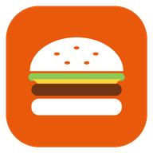

FastFood CRM
Oxirgi yangilanish / Последнее обновление / Last updated: 26.10.2026
Maxfiylik siyosati
FastFood CRM — kafe, fastfud va restoranlar uchun ish dasturi (kassa, buyurtmalar, oshxona, ombor, hisobotlar). Ilovadan kafe xodimlari foydalanadi. Ushbu siyosat ilova qanday ma’lumotlarni qayta ishlashini tushuntiradi.
Qanday ma’lumotlar saqlanadi
- Xodimlar: ism, lavozim, kirish uchun PIN-kod yoki parol (shifrlangan holda), smena vaqtlari.
- Mijozlar (agar kafe ularni kiritsa): ism, telefon raqami, yetkazib berish manzili, xaridlar tarixi va bonus (keshbek) balansi.
- Ish ma’lumotlari: menyu, buyurtmalar, to‘lov turi va summasi, ombor qoldiqlari, hisobotlar.
Ilova joylashuv, kontaktlar, kamera, mikrofon yoki reklama identifikatorini so‘ramaydi va yig‘maydi. Ilovada reklama va uchinchi tomon kuzatuv vositalari yo‘q. Karta raqamlari ilovaga kiritilmaydi — faqat to‘lov turi (naqd, karta, Click, Payme, Uzum) va summasi yoziladi.
Ma’lumot qayerda saqlanadi
Barcha ma’lumotlar kafe foydalanadigan FastFood CRM serverida saqlanadi va internet orqali faqat shifrlangan (HTTPS) ulanishda uzatiladi. Ma’lumotlar sotilmaydi va uchinchi shaxslarga berilmaydi. Kafe egasi istasa, Telegram orqali kunlik hisobot oladi — bu kafe egasining o‘zi yoqadigan sozlama.
Ma’lumotni o‘chirish
Xodim yoki mijoz ma’lumotini kafe administratori dasturning o‘zida o‘chira oladi. Shuningdek, quyidagi kontaktlar orqali o‘chirishni so‘rashingiz mumkin — so‘rov 30 kun ichida bajariladi.
Bolalar
Ilova ish uchun mo‘ljallangan va 13 yoshgacha bolalarga qaratilmagan.
Aloqa
Telegram: @TBA_003 · Telefon: +998 90 693 65 94 · Instagram: @fast_food_crm
Политика конфиденциальности
FastFood CRM — рабочая программа для кафе, фастфуда и ресторанов (касса, заказы, кухня, склад, отчёты). Приложением пользуются сотрудники заведения. Эта политика объясняет, какие данные обрабатывает приложение.
Какие данные хранятся
- Сотрудники: имя, должность, PIN-код или пароль для входа (в зашифрованном виде), время смен.
- Клиенты (если заведение их добавляет): имя, номер телефона, адрес доставки, история покупок и бонусный (кешбэк) баланс.
- Рабочие данные: меню, заказы, способ и сумма оплаты, складские остатки, отчёты.
Приложение не запрашивает и не собирает геолокацию, контакты, камеру, микрофон или рекламный идентификатор. В приложении нет рекламы и сторонних трекеров. Номера карт в приложение не вводятся — фиксируются только способ оплаты и сумма.
Где хранятся данные
Все данные хранятся на сервере FastFood CRM, которым пользуется заведение, и передаются только по защищённому соединению (HTTPS). Данные не продаются и не передаются третьим лицам. Владелец заведения по желанию получает ежедневный отчёт в Telegram — эту настройку включает сам владелец.
Удаление данных
Администратор заведения может удалить данные сотрудника или клиента прямо в программе. Также вы можете запросить удаление через контакты ниже — запрос выполняется в течение 30 дней.
Дети
Приложение предназначено для работы и не ориентировано на детей до 13 лет.
Контакты
Telegram: @TBA_003 · Телефон: +998 90 693 65 94 · Instagram: @fast_food_crm
Privacy Policy
FastFood CRM is a work tool for cafes, fast-food outlets and restaurants (point of sale, orders, kitchen display, inventory, reports). The app is used by the staff of the business. This policy explains what data the app processes.
Data we store
- Staff: name, role, login PIN or password (stored hashed), shift times.
- Customers (if the business adds them): name, phone number, delivery address, purchase history and bonus (cashback) balance.
- Business data: menu, orders, payment method and amount, stock levels, reports.
The app does not request or collect location, contacts, camera, microphone or advertising identifiers. There are no ads and no third-party trackers. Card numbers are never entered into the app — only the payment method and amount are recorded.
Where data is stored
All data is stored on the FastFood CRM server used by the business and is transmitted only over encrypted connections (HTTPS). Data is not sold or shared with third parties. The business owner may optionally receive a daily summary via Telegram — this is a setting the owner enables.
Data deletion
The business administrator can delete staff or customer records directly in the app. You can also request deletion through the contacts below; requests are completed within 30 days.
Children
The app is intended for work and is not directed to children under 13.
Contact
Telegram: @TBA_003 · Phone: +998 90 693 65 94 · Instagram: @fast_food_crm